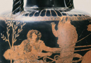

Pelops
The mythological family history begins with the ancestors of Atreus Tantalus and Pelops. Pelops is the son of Tantalus and famously cooked by his father. The story goes that Tantalus invites the gods to a banquet and prepares his son as a dish. The gods understand the deception, except for Demeter, who eats a piece of his shoulder (her revulsion afterward can be connected to her role as a civilizing goddess, who is also linked in some myths and religious texts with bringing an end to cannibalism amongst humans). Pelops is eventually restored to life, his shoulder replaced by a marble shoulder, and in some versions Pelops is taken away by Poseidon, as his lover. Tantalus, as we have already encountered in the Essential Element on the underworld, is given an eternal punishment in the afterlife for deceiving them. This myth on the one hand links the house of Atreus strongly to the gods, and on the other hand exemplifies the hubris and curse that will follow the family throughout its generations.
After he is restored to life, Pelops leaves Asia Minor to go to Elis in the Peloponnese (named after Pelops) in order to win the hand of Hippodamia, the daughter of king Oenomaus. In order to win Hippodamia, he has to defeat the king in a chariot race. Thirteen suitors fail before he wins, and when the king caught a suitor, he killed him. In order to win, Pelops is said in different versions of the myth either to have had help from Poseidon, or to have bribed Oenomaus’charioteer Myrtilus to take the linchpins from the wheels of the Oenomaus’ chariot. King Oenomaus crashes and dies during the pursuit (see image 1).
{kind=link}